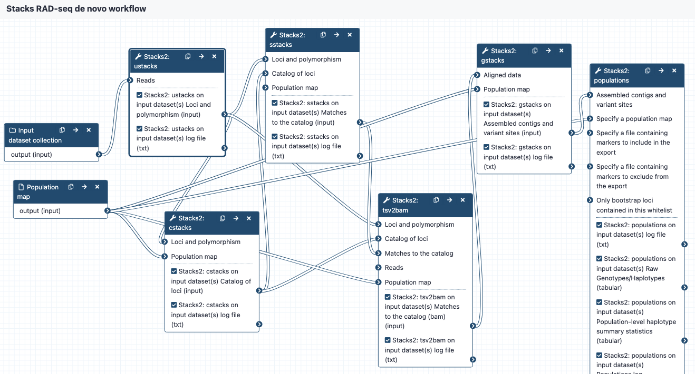

# workflow-denovo-stacks These workflows are part of a set designed to work for RAD-seq data on the Galaxy platform, using the tools from the Stacks program. Galaxy Australia: https://usegalaxy.org.au/ Stacks: http://catchenlab.life.illinois.edu/stacks/ ## Inputs * demultiplexed reads in fastq format, may be output from the QC workflow. Files are in a collection. * population map in text format ## Steps and outputs ustacks: * input reads go to ustacks. * ustacks assembles the reads into matching stacks (hypothetical alleles). * The outputs are in a collection called something like: Stacks2: ustacks on data 21, data 20, and others Loci and polymorphism. Click on this to see the files: * for each sample, assembled loci (tsv format), named e.g. sample_CAAC.tags * for each sample, model calls from each locus (tsv format), named e.g. sample_CAAC.snps * for each sample, haplotypes/alleles recorded from each locus (tsv format), named e.g. sample_CAAC.alleles * Please see sections 6.1 to 6.4 in https://catchenlab.life.illinois.edu/stacks/manual/#ufiles for a full description. cstacks: * cstacks will merge stacks into a catalog of consensus loci. * The outputs are in a collection called something like Stacks2: cstacks on data 3, data 71, and others Catalog of loci. Click on this to see the three files, each in tsv format: catalog.tags catalog.snps catalog.alleles sstacks: * sstacks will compare each sample to the loci in the catalog. * The outputs are in a collection called something like Stacks2: sstacks on data 3, data 76, and others Matches to the catalog.Click on this to see the files: There is one file for each sample, named e.g. sample_CAAC.matches, in tsv format. tsv2bam: * Conversion to BAM format * Reads from each sample are now aligned to each locus, and the tsv2bam tool will convert this into a bam file for each sample. * The outputs are in a collection called something like Stacks2: tsv2bam on data 3, data 94, and others Matches to the catalog.Click on this to see the files: There is one file for each sample, named e.g sample_CAAC.matches, in BAM format. gstacks: * Catalog of loci in fasta format * Variant calls in VCF format populations: * Locus consensus sequences in fasta format * Snp calls, in VCF format * Haplotypes, in VCF format * Summary statistics 
{kind=link}